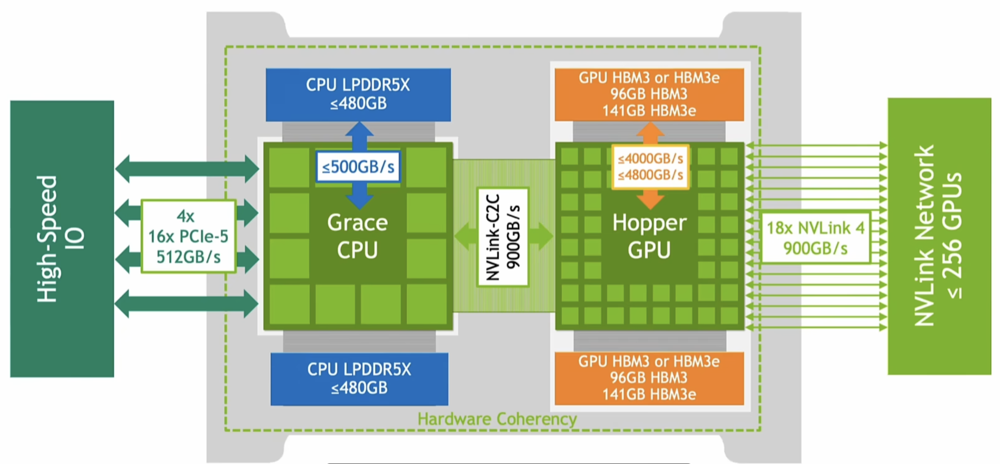

总体框架
来源：ZOMI；
GPU Architecture
体系结构（以 Hopper 为例）
一个 GPU 包含 132 个 SM，80GB Global Memory（位于 HBM3（High Bandwidth Memory） 芯片，此外还有常量内存和纹理内存），50MB L2 Cache（跨 SM 共享）；

一个 SM 中有 128 个 CUDA Core（具体见后文参数表截图），4 个 Sub Core（每个 Sub Core有一个 Warp Scheduler 和一个 Dispatch Unit 共同控制指令发射），4 个 Tensor Core，1 个 TMA，228KB Shared Memory（L1 缓存，几百 K），256KB Register File，以及一般不需要考虑的 LSU 和 L0/L1 Instruction Cache；
每个 CUDA Core 有整数、浮点运算单元，寄存器；寄存器放不下的放在 Local Memory （线程独占，但实际存放在 Global Memory 或 L2 Cache 中）；
Tensor Core：
- Ampere（A100） 4×4×16 FP16, BF16, TF32, INT8；
- Hopper（H100） 8×8×16 FP8, FP16, BF16, TF32, INT8
- Blackwell（GB200） 16×16×16 FP4, FP8, FP16, BF16
NCCL：
- NVLink：高速 GPU 互联总线（对应 CPU 的 PCIe）与通信协议，支持统一内存访问（Unified Memory Access）；
- NVSwitch：NVLink 专用交换芯片（Switch Fabric），允许 All-to-All Communication，解决直连拓扑的限制；
- Broadcast：从一个 GPU 向所有 GPU 发送数据，用于模型参数广播（Distributed Training）；
- Scatter：将一个 GPU 数据复制到多个 GPU，用于参数分配；
- Reduce：将所有 GPU 数据汇总累加到一个 GPU，用于参数收集；
- All-Reduce：计算所有 GPU 的数据和，并同步到每个 GPU，用于梯度平均（Data Parallel）；
- Gather：将所有 GPU 数据汇总存储到一个 GPU；
- All-Gather：所有 GPU 共享所有 GPU 的数据，用于模型并行（Tensor Parallel）；
- ReduceScatter：Reduce + Scatter 结合，用于高效梯度传输；
Hopper 架构参数
144 SMs(Streaming Multiprocessor) per full GPU
128 FP32 CUDA Cores per SM, 18432 FP32 CUDA Cores per full GPU
4 fourth-generation Tensor Cores per SM, 576 per full GPU
60 MB L2 cache
引入了 Thread Block Cluster 和 Distributed Shared Memory，硬件层面加入了 SM-to-SM Network；

Blackwell 架构参数
- Blackwell 伪白皮书；
- 引入 FP4 / FP6；
CUDA
- 入门1，入门2，官方文档，部分官方文档索引；内存访问；
- 一个 Grid 对应一次 Kernel Launch；每个 Block 与 唯一一个 SM 对应（一个 SM 可以同时处理多个 Block）；线程调度的基本单位是 Warp，一个 Warp 32 个线程；
- 通过 WMMA API 或 mma.sync PTX（asm volatile） 指令异步调用 Tensor Core（或调用 cuBLAS 和 CUTLASS 库，后者定制化程度更高），分配调度单位是 Warp；
Transformer 优化
常见推理优化指标：
- Throughput（吞吐量）：单位时间内处理 token 数 / 请求数；
- TPS（Tokens Per Second）/ TPOT（Time Per Output Token）；
- TTFT（Time to First Token）/ First-Token Latency；
- MFU（Model FLOPs Utilization）模型算力利用率 / HFU（Hardware FLOPs Utilization）硬件算力利用率；
分布式训练：
- 数据并行（Data Parallelism）：将模型复制 n 份，输入不同的小批量数据（mini-batch）并行训练，最后 All-Reduce 合并梯度更新；扩展：DeepSpeed ZeRO-1（优化器状态拆分）/ 2（梯度信息拆分）/ 3（参数动态加载）；
- 流水线并行 Pipeline Parallelism：每个 GPU 负责几层，同时与前后 GPU 交互数据（后、前向传播），相当于纵向切割；需要尽可能减少 Bubble；
- 张量并行（Tensor Parallelism）：单个算子拆到多个 GPU 上，相当于横向切割；与流水线并行统称模型并行（Model Parallelism）；
- LoRA：冻结其余参数，只微调 Attention 权重；使用低秩矩阵（将一个大矩阵拆成两个秩更低的矩阵之和）分解减少存储需求；
Attention 相关公式：
前向传播公式：
\[ \begin{aligned} \mathbf{a}^{(0)} &= \mathbf{x} \\ \mathbf{z}^{(l)} &= \mathbf{W}^{(l)} \, \mathbf{a}^{(l-1)} + \mathbf{b}^{(l)}, \quad l=1,2,\ldots,L \\ \mathbf{a}^{(l)} &= f^{(l)}\left(\mathbf{z}^{(l)}\right), \quad l=1,2,\ldots,L \\ L &= \mathcal{L}\left(\mathbf{a}^{(L)}, \mathbf{y}\right) \end{aligned} \]
反向传播公式（ \(\odot\) 为逐元素相乘）：
\[ \begin{aligned} \boldsymbol{\delta}^{(L)} &= \nabla_{\mathbf{a}^{(L)}} \mathcal{L} \odot f^{(L){\prime}}\left(\mathbf{z}^{(L)}\right) \\ \boldsymbol{\delta}^{(l)} &= \left(\mathbf{W}^{(l+1)T} \boldsymbol{\delta}^{(l+1)}\right) \odot f^{(l){\prime}}\left(\mathbf{z}^{(l)}\right), \quad l=L-1,\ldots,1 \\ \frac{\partial L}{\partial \mathbf{W}^{(l)}} &= \boldsymbol{\delta}^{(l)} \, \mathbf{a}^{(l-1)T} \\ \frac{\partial L}{\partial \mathbf{b}^{(l)}} &= \boldsymbol{\delta}^{(l)} \end{aligned} \]
Self-Attention（ \(\mathbf{X} \in \mathbb{R}^{n \times d}, \ \mathbf{W}^{Q}, \mathbf{W}^{K}, \mathbf{W}^{V} \in \mathbb{R}^{d \times d_k},\ d_k=d/head\)）： 其它优化：
\[ \begin{aligned} \mathbf{Q} &= \mathbf{X} \mathbf{W}^{Q}, \\ \mathbf{K} &= \mathbf{X} \mathbf{W}^{K}, \\ \mathbf{V} &= \mathbf{X} \mathbf{W}^{V} \end{aligned} \]
\[ \mathbf{A} = \text{softmax}(\frac{\mathbf{Q}\mathbf{K}^T}{\sqrt{d_k}})\mathbf{V}, \\ a_{ij} = \frac{\exp\left(\frac{q_i \cdot k_j}{\sqrt{d_k}}\right)}{\sum_{j{\prime}=1}^{n} \exp\left(\frac{q_i \cdot k_{j{\prime}}}{\sqrt{d_k}}\right)}\mathbf{V} \]
Multi-Head Attention：
\[ \text{head}_i = \text{Attention}(Q_i, K_i, V_i) = \text{softmax} \left( \frac{Q_i K_i^T}{\sqrt{d_k}} \right) V_i \]
\[ \text{MultiHead}(Q, K, V) = \text{Concat} ( \text{head}_1, \text{head}_2, \cdots, \text{head}_h ) W^O \]
Attention 优化：
KV-Cache：每次新加一个 token（上次的输出）， \(Q\) 新增一行， \(QK^T\) 新增一行（由 \(Q\) 新增那行与整个 \(K\) 共同算得）， \(A\) 新增一行（由 \(QK^T\) 的最新行与整个 \(V\) 共同算得）；一般分至少 30% 显存用于 KV-Cache；
KV-Cache Reuse：常用 KV Cache 常驻显存，适合 Long System Prompt 场景；
PagedAttention：由于序列增长速度快，需要类似 OS 的内存分配机制，设一个块表（Block Table），用于从连续的逻辑地址映射到不连续的物理地址；GIF 演示；
FlashAttention：合理利用 GPU 内存结构，减少访存次数；计算复杂度保持 \(O(n^2)\) 但不存储 \(O(n^2)\) 的权重矩阵；尽量将 GMEM 的访存移到 SMEM 中；
LinearAttention：利用核函数（Kernel）和低秩分解将时空复杂度均从 \(QK^T\) 的 \(O(n^2)\) 降到 \(\phi(Q) \cdot \phi(K)^T = KQ^T\) 的 \(O(n^2)\)；
StreamingAttention：类似 Sliding Window Attention，将全局注意力限制在常数级别的固定窗口内以达到加速，又尽可能捕捉到全局信息；
其它优化：
- Continuous Batching（In-flight Batching）：因此当一个 Batch 中某个回答结束后，立即加入新的回答以填满 Batch；
- Chunked Prefill / Context：将长 Prompts 拆成多个 Chunks，按批次计算，允许多个请求共享资源；提高吞吐量、降低推理延迟、节省计算资源，避免某个 Generation Phase 的 token 由于进来一个超长 Context 而被阻塞；对显存大小要求更高、访存代价更高；
- Grouped-Query Attention：多个 Head 共享一组 Key 和 Value；Multi-Query Attention：所有 Head 共享一组 Key 和 Value；
- Split-K：矩阵乘法维度分割；
- 模型压缩：量化（Quantization）、蒸馏（Distillation）、剪枝（Pruning）、二值化（Binarization）；
- 训练部分：Training Resiliency；
- Batch GEMM：允许多个形状相同的矩阵对并行计算，在单一 Kernel 内完成；Grouped GEMM 允许不同形状，限制更少；
量化
混合精度训练：
DeepSeek-V3 中的混合精度：
作用：保精度加速、省显存；指标：性能、精度、显存；
TRT-LLM 会将量化（Quant）、重量化（ReQuant）和反量化（DeQuant）均作为算子；
量化参数：缩放因子（scale）和零点（zero-point）；
各类方法：
- 训练时量化（Quant Aware Training）：插入伪量化算子（Fake Quant，作用通常是检测数据极差以确定缩放因子、阶梯化高精度数据），作为高精度模型一部分参与微调，然后导出为低精度；这些伪量化算子在推理时直接做常量折叠；
- 训练后量化（Post-Training Quantization）：离线静态、动态量化：用一些实际数据分布模拟输入用于校准（Calibration），使用 KL 散度（计算真实激活值分布与预测分布的相对熵差异）计算量化参数；静态量化参数固定，动态量化则会根据输入确定 scale 和 zero-point；目前推理引擎多使用静态；
- 激活感知量化（Activation-aware Weight Quantization）：静态，根据不同通道在前向传播中的影响（离群值、关键 Channel 等），针对性调整策略，仅量化影响小的参数；
- GPT-Q：静态，采用梯度下降，追求全局最优化，可以追求极低比特 4bit；
量化粒度：
- Per-token，Per-channel，Per-tensor；
- Block（块级量化） + Double（双重量化） + Dynamic Quant（根据输入动态量化）；
NVIDIA AI Software
Cutlass
可以做 Kernel Fusion，直接成果 Fused Multi-Head Attention；
流水优化：在前一个 Thread 做运算的同时做后一个 Thread 的 Data Loading（Prefetch），从而掩盖访存 Latency；
- Prologue：Launch，Load Activation，Load Weights；
- Main Loop（Tensor Core 使用阶段）；
- Epilogue：Store Activation；
Cutlass 2.x：针对 Pre-Hopper archs（Ada sm_89 及之前）；
- 计算完成后，在 Shared Memory 中做 Epilogue 和 Alignment，对齐后使用更大访存 API 写回 Global Memory；
1
2
3
4using ThreadBlockShape = cutlass::gemm::GemmShape<128, 128, 64>;
using ShapeMMAWarp = cutlass::gemm::GemmShape<64, 64, 64>;
using ShapeMMAThread = cutlass::gemm::GemmShape<16, 8, 16>;
using EpilogueOp = cutlass::epilogue::thread::LinearCombination<...>;Cutlass 3.x：增加 Hopper sm_90a kernels；
只需要指定 BlockShaper 和 ClusterShape，WarpShape 会自动推断；
分阶段使用
using指定 Shape 和操作而非一次性全塞进cutlass::gemm::device::Gemm中；自动根据 Alignment 是否符合 TMA 要求决定使用 UTMALDG 还是 LDGSTS 异步指令，前者只需一个或两个 Warp 做异步 Data Loading，其余 Warp 只做 Tensor Core 计算（在所需数据加载完之后）；
Kernel Scheduler: Warp Specialized + Pingpong；使用 Barrier 做同步；
绿色代表 Producer Warps（Prologue / Epilogue），蓝色代表 TC Warps（Tensor Core Calculation）；
CuTe：Cutlass 3.0 提出；
Layout<Shape, Stride>：将 n-D 逻辑坐标映射到 1-D 物理索引；Shape 指定逻辑矩阵形状，Stride 按行、列、层的顺序指定相邻两值在物理索引的距离；
Tensor<Ptr, Layout>：Layout + 对应物理空间指针；同一个 Ptr 可以组合不同 Layout；
关键数据传输指令：Copy 和 TiledCopy；
TensorRT-LLM
TensorRT 不支持多卡、未对 LLM 做针对性适配；
FasterTransformer 太上层、C++ 搭建、未发布为产品，不再维护；
TRT-LLM 结合了 FasterTransformer 的性能和 TRT 的迭代速度；
对非 LLM 模型可以直接使用 TensorRT Engine 搭建，再与 TRT-LLM Engine 结合成 Pipeline；也支持用户自定义模型架构；
显存结构：Weight、Internal Activation Tensors（Activation）、IO Tensors（KV-Cache）；max_num_tokens 参数决定了 Activation 的维度，从而影响剩余的 KV-Cache 大小；
支持量化：
FP16 / BF16；
Weight-only（INT8 / INT4）；
W4A16（AWQ / GPTQ）；
W8A8 SmoothQuant（INT8）；
FP8（Hopper / Ada Lovelace）；
KV Cache Quantization（INT8 / FP8）；
架构流程：
- Convert Checkpoint：ONNX 等模型导入，反序列化，转换成计算图和 Inference IR；在此指定 TP、PP Size 和 Data Type；
- Define Model Architecture：预设各类主流 LLM；
- Load weight & Build engine：构建一个独立的执行引擎；根据当前 GPU 做 Self-Attention 优化、混合精度量化和反量化、算子融合与图优化、Kernel 级别流水线优化；NVIDIA AMMO 低精度量化校准库；
- Execution：推理，Summarize，MMLU 评估；
Megatron-LM
- 多种并行模式混合的分布式训练框架，使用多种并行；
- 混合精度矩乘：使用 FP16 前、反向传播但主权重仍为 FP32；通过 Loss Scaling（计算梯度前将损失 L 乘上缩放因子 S，更新时再除以 S）避免数值下溢；
- 引入 Context Parallelism 和 Sequence Parallelism；
Triton
多框架（PyTorch、TensorFlow）、多种请求（实时、批处理、流式）、多种硬件（CPU、GPU）、跨平台的统一推理服务；
可与 K8S 结合以实现 MLOps，提供性能评估等功能；
动态批处理：多个请求打包成一个 Batch（PD 可以被打进一个 Batch）；
一卡多用：提供请求调度功能；
版本管理：方便 A/B 测试、在线更新与回滚、日志与监控；
模型仓库、配置文件；
API：RESTful 与 gRPC 与客户端交互；
NeMo
在 Triton 基础上新增端到端云上训练、微调与部署：同样包含 Megatron-LM 中带有 Transformer Engine 的核心功能 Megatron-Core；
推理：NeMo Framework Inference 即 TRT-LLM 开发与运行时库；
多模态、结构化数据处理（Curation）；简化各项配置；
检测硬件，自动选择合适的超参（Batch Size、Data Type 等）；
SFT、RLHF 等后训练支持；
企业级安全性；
NIM
- 与 Triton 同层级或更高层级的版本管理、动态批处理、负载均衡、监控与管理；
- 原生支持容器化与 K8S 云原生部署，开箱即用（OOTB），更易扩展，更适配多机部署；
- 与 Triton 一样后端使用 TensorRT-LLM；
- 解耦【应用层代码】与【模型代码、权重、Infrastructure】；
- NIM Pod 可与 KServer 等结合；
其它推理框架
推理框架常见架构：
- Inference IR：将 TensorFlow、ONNX 等格式转换为统一中间表示；
- Pre Optimization：公共表达式消除、死代码优化、代数简化；
- Optimization：算子融合（典型：Conv2d+BN+RELU ⇒ CBR）、冗余算子消除、算子替换、常量折叠；
- Post Optimization：数据格式转换、内存布局优化、重复算子合并；
MNN：
针对移动端和嵌入式的轻量推理框架，支持 iOS 和支持 POSIX 的所有系统；
无依赖，深度裁剪：静态库体积 iOS 几 M，安卓几百 K；
组成部分：Converter（前端多种格式转换 → 图优化、算子融合） ⇒ Interpreter（Engine 加载转换后的模型，Backends 支持 Metal、OpenCL、Vulkan 等多种实现）
其它优化：预推理（评估不同计算策略的资源需求，预分配资源），手写汇编低精度运算库、关键算子；
-
- PD 分离：解耦 Prefill（Context Phase，Compute Bound，计算密集、带宽打不满）和 Decode（Generation Phase，Memory Bound，访存密集、算力不满）两阶段（即分布式内存系统 + 流处理系统）；
- 构建全局 KVCache Pool，实现以 Cache 为中心的调度（KVCache-centric Scheduling）；
vLLM：
- PagedAttention：除了解决显存分配问题外，可以更方便地实现部分 Cache 的共用，特别是共用前缀的情况；
- Continuous Batching，将任务分为 waiting、running、swapped 三类，计算结束的立即释放；